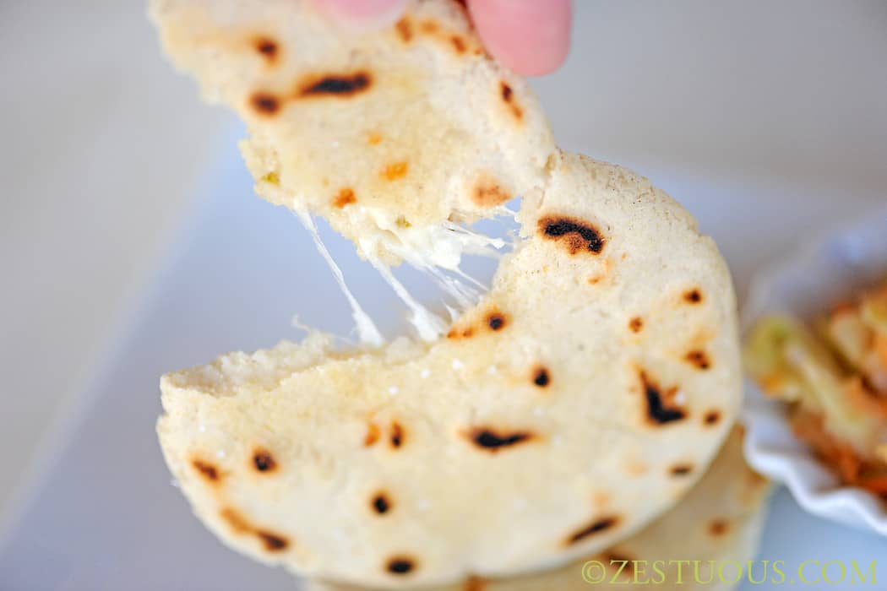

Pupusa

Description
A Salvadorian treat, these homemade tortillas stuffed with cheese are
great with a traditional coleslaw called curtido. To serve, slice open one
side of a pupusa, and spoon curtido into the opening. Farmer's cheese or
mozzarella can be substituted for queso blanco.
Ingredients
- 2 cups masa harina
- 1 cup water
- 1 cup queso fresco
Steps
-
Stir the
masa harina
and water together in a mixing bowl until smooth; knead well. Cover
bowl, and let the dough rest 5 to 10 minutes.
-
Shape the dough into eight, 2 inch diameter balls. On a lightly floured
surface, roll out each ball into 6 inch diameter round. Sprinkle 1/4 cup
queso fresco over each round. Place a second tortilla over the cheese,
and pinch the edges together to seal in the cheese.
-
Heat ungreased skillet over medium-high heat. Place one tortilla into
the skillet at a time, and cook until cheese melts and tortillas are
lightly browned, about 2 minutes on each side.